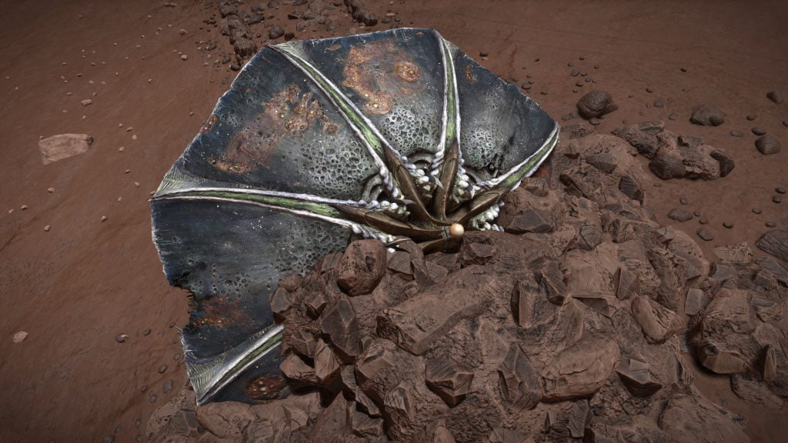
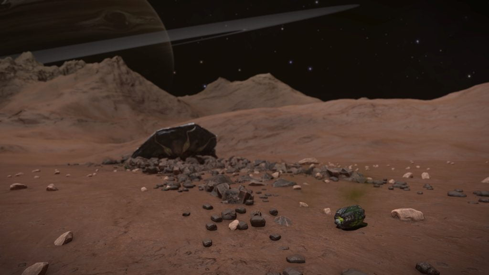

…Material Analysis complete…
…High concentrations of mycoid particle detected…
…Searching known databases for identification…
…Results confirmed…
Designation: Thargoid Scout
Image: SHIP ANALYSIS
A crashed Thargoid Scout can be found in the HIP 17125system, on body A 3 a.
The coordinates for the site are at -65.1570, 47.4684 (in Live/4.0) or at -65.8248, 48.8649 (in Legacy/3.8).

The crash site is surrounded by Thargoid Technology Samples, Thargoid Biological Matter, and Thargoid Resin.
The buried nature of the ship makes it difficult to target with your SRV's data link scanner, but if you can it, your SRV is able to perform a ship analysis:
…Material Analysis complete…
…High concentrations of mycoid particle detected…
…Searching known databases for identification…
…Results confirmed…
Designation: Thargoid Scout
Image: SHIP ANALYSIS
